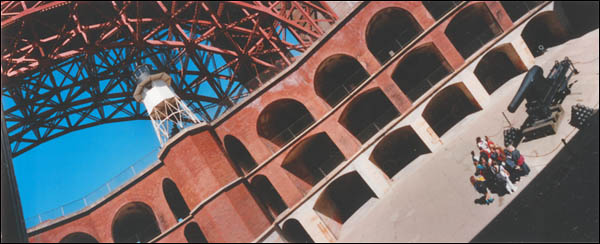

Fort Point under the Golden Gate Bridge. Widelux photo © Patty Sokolecki Smoot 2001.
Fort PointFort point is located under the south terminus of the Golden Gate Bridge. Fort Point was constructed by the U.S. Army Corps of Engineers between 1853 and 1861. It replaced a 1794 Spanish fort. Its coastal artillery commanded Golden Gate entry and would prevent entrance of a hostile fleet into San Francisco Bay. While the Fort was manned during the Civil War and after, its cannons were removed by 1900. Today, it is National Historic Site, part of the Golden Gate National Recreation Area, and is open to the public. Bring your camera -- and a coat. It can get cold inside those brick walls.
Click Here
Click Here
Click Here
Amusement Parks WebMaster
Last Updated
Support Free-access Online History and Genealogy. Join Us!